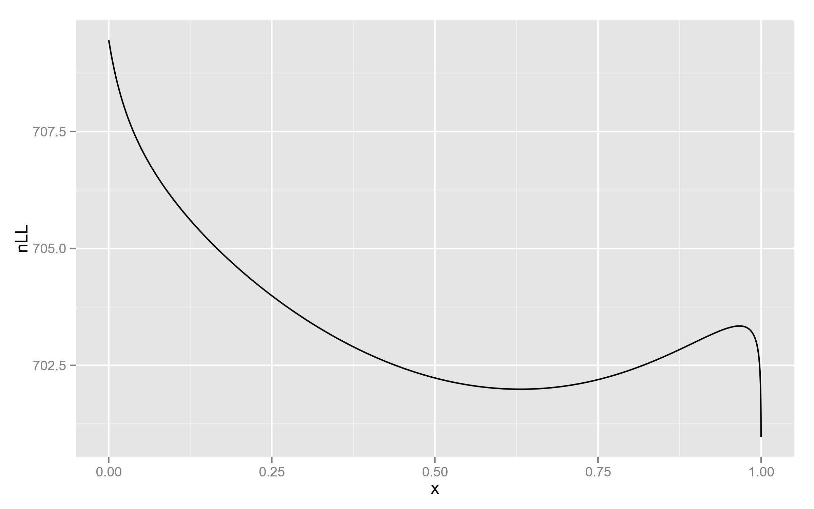
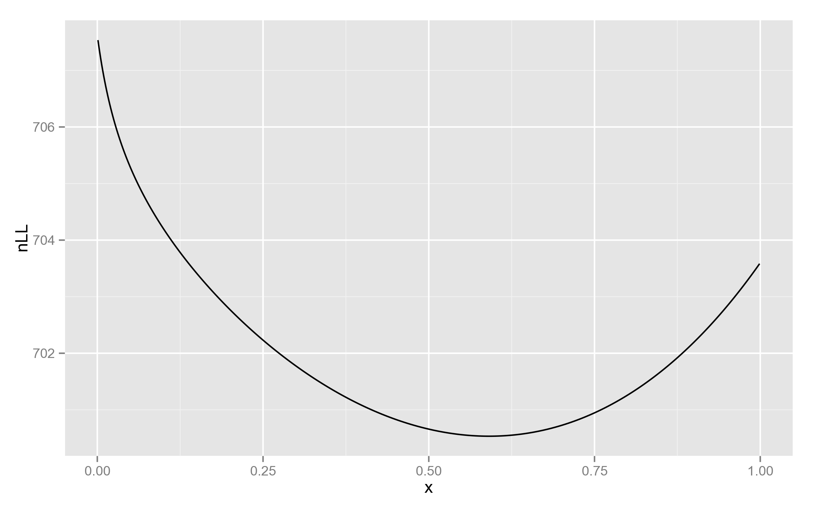

This post ends the discussion of PyLMM, as there’s almost nothing more to talk about.
Is fit() slow in PyLMM? No, it’s just the different amount of grid points.
Given that the calculation of log-likelihood function takes similar amounts of time, and both tools use similar strategies for finding the optimal value, the difference in performance of fitting h2 (the mixing parameter) is due to the number of calls of LL.
Since the results on the test dataset are the same, this suggests that the grid in PyLMM might be too dense. By default, FaST-LMM uses 10 points, whereas PyLMM uses 100. The remaining iterations of Brent method add another 10-25 evaluations, leading to the observed 3x difference.
Indeed, with the parameter nGridH2 set to 100 in findH2, the number of LL evaluations becomes roughly the same, and now PyLMM is faster (because of faster log-likelihood calculation).
What about REML=false?
I couldn’t get satisfactory results with FaST-LMM, its fitting procedure was unable to estimate h2, always setting it to the maximum value of 0.99999.
I found this weird and decided to look at the plot of log-likelihood function, for at least one of the SNPs:
lmm_fast.setX(X)
for h2 in range(1, 10000):
res = lmm_fast.nLLeval(h2/10000.0, REML=False)
print("{0}\t{1}".format(h2/10000.0, res['nLL']))
The resulting plot indeed shows something interesting:

Just for comparison, below is the plot with REML likelihood. As can be seen, it has no such behaviour near 1.

This is a good example of why full likelihood is not always appropriate!
But then, why didn’t PyLMM end up in 1?
Let’s see what happens after the values on the grid are computed.
PyLMM
for i in range(1,n-2):
if self.LLs[i-1] < self.LLs[i] and self.LLs[i] > self.LLs[i+1]:
HOpt.append(optimize.brent(self.LL_brent,args=(X,REML),brack=(H[i-1],H[i+1])))
That’s it, boundaries are not checked for possible extrema.
FaST-LMM (fastlmm.util.mingrid.minimize1D)
In addition to considering triplets as candidates for Brent search,
boundaries are checked by default:
if resultgrid[-1]<resultgrid[-2]:#if the outer boundary point is a local optimum expand search bounded between the grid points
minlocal = opt.fminbound(f,evalgrid[-2],evalgrid[-1],full_output=True)